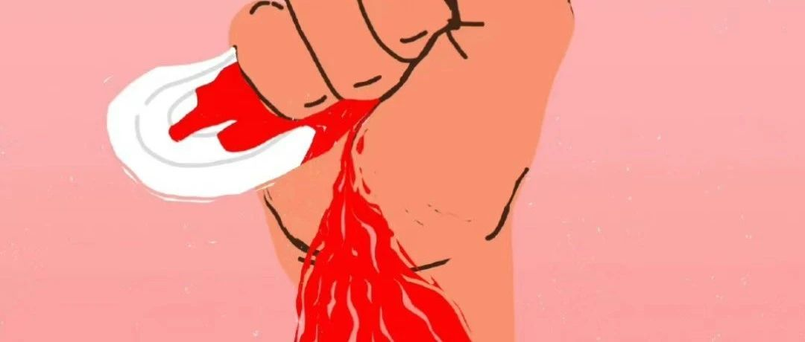

就小资产阶级女权主义问题与小组成员谈谈
原创
十七年的寒蝉
寒蝉之书
2023年06月20日 20:12
北京
这篇文章是为了小组的成员而写的，像上次一样，笔者仍将以近期张薇的事情作为例子，但醉翁之意不在酒，需要事先说明的是，首先，正如笔者之前所说，意识形态作为一种类典型，常常比个别具体事实更真实，因此笔者在此不想过多介入事件本身的是非，而是讨论这样的事情表现了社会怎样的意识形态，而我们小组多成员应该如何看待它们；其次，我们都是对现实的那种支配性力量绝望的人，所以笔者不会继续讨论这一事件应该如何解决，虽然我曾经说当事人由于歧视无产阶级（这一点我后面还会再次说到）而不适合继续待在所谓的无产阶级政党之内。如果她最终遭到处理，是否会激化右翼民粹分子；如果她不被处理，是不是说明她是特权阶级的女儿而遭到了庇护，这些问题都不是笔者今天希望考虑的。另外，虽然笔者在此批判小资产阶级女权主义，但笔者多次强调不要给各种性质的现象随意地戴小资产阶级帽子，哪怕它恰好发生在小资产阶级上（因为这可能只是偶然，而且，我们对于小资产阶级的理解仍然相当不足，常常只把它视为无产阶级和资产阶级之外的剩余人）；另一方面，即便小资产阶级的女权主义也有值得捍卫的地方，这就像一百年前的资产阶级妇女参政运动一样。（彼时，由于无产阶级革命的急迫性和资产阶级女权主义主动和无产阶级的妇女解放切割的原因，无产阶级的妇女解放运动势必要要与资产阶级女权切割，但是在今天看来资产阶级妇女参政论者的很多诉求是值得捍卫的）因此，我们要批判的小资产阶级女权，并不在于那些女性自己身为小资产阶级，而是在于她们拥有小资产阶级的意识形态，特别是那些反动的意识形态。
想要论证张薇这样的女权主义者的阶级性和反动性非常容易。最近无论是
BBC
曝光的新闻，还是大学里曝光的进入女浴室偷拍的男生，都是小资产阶级的——和被偷拍者来自同一个阶级——并且看上去体面甚至（有一部分显得）精致。而一般来说的性骚扰案件，也经常是来自学校的老师和公司里的上级。这不是说无产阶级男性不会偷拍或性骚扰，笔者接触过的三和老哥们也有不少有此种陋习，但是他们很少到达恶性的程度，常常只是偷拍路人这种程度的（这种程度的偷拍甚至少数女性也会做的）。而真正侵犯性的恶性偷拍，尤其是那种成产业链的活动，比起无产阶级男性，显然压倒性地更可能来自小资产阶级的男性，甚至是小资产阶级的女性（她们因为性别相同而更容易完成偷拍其他女人，然后把片子卖给男性同伙或观众）。然而，无产阶级的男性由于劳动而变得强壮、肮脏、丑陋、粗鲁，恰恰被她们视为比资产阶级和小资产阶级的男性更具有所谓“男性性”，更容易被她们不信任，认为是潜在的侵犯者和她们口中的“猥琐男”（她们口中的猥琐不就是无产阶级男性粗鲁的男性性吗？那些真正恶意性骚扰和偷拍的资产阶级男性，倒是体面的很）。值得一提的是，在这场事件中张薇是非常恶意歹毒的，既然在事情明了的情况下还发出了那样的帖子，她就很可能是故意地表达自己的歧视，这已经进入了反动性的范围；但是一般来说，这类意识形态即对无产阶级男性尤其的不信任，在一些资产阶级和小资产阶级女性身上较为常见，而且常常不一定带有主观恶意，甚至只是一些无意识的情绪。我们知道货拉拉案中的女当事人可能也有类似的意识形态背景，但是她没有任何的恶意，甚至我们很难去批判一个为此自杀的人，而只能感到遗憾。这类意识形态和女权主义并没有必然的联系，在今天的中国，这大概只是因为女权主义在小资产阶级女性群体内的传播给了她们看似正义的理由来表达自己有意无意的歧视。而在美国种族隔离时期，我们更能看出它甚至可能和男权有关：当时白人就喜欢向自己的女性宣传黑人男性的危险和“潜在的侵犯性”，但如果哪个白人女性自由地爱上了黑人男性，后者很容易被几乎全是男性的白人暴徒私刑处死。甚至表达反对和讽刺女权主义的视频中，一样出现了类似的桥段：小资产阶级的女权主义者攻击无产者男性。考虑到视频的作者看上去对于无产阶级没有任何的感情，这里可能只是一种无意识的流露：小资产阶级的反女权主义者，无法理解自己这个阶级的女性在性方面的敏感，但完全理解她们对于无产阶级的歧视，因为他们自己其实也一样。因此，在张薇事件中从同情农民工大叔的角度切入的人相当一部分并非真有有左翼思想或阶级感情，后者只是他们有意或无意地用来表达对女权主义不满的理由——这与这一部分的小资产阶级女权主义者利用女权主义来表达对无产阶级的歧视可能很类似。
反女权主义的讽刺视频作者也一样有类似意识形态
未明子在说和布尔乔亚女权主义者对话的原则中说，不能以政治经济学代替爱欲经济学。而且，历史上性别分工的产生比阶级社会更早，它在那时就已经是不自由的，只是可能在进入阶级社会之后才具有剥削意义上的压迫性。今天的女权主义者把性别矛盾放在一个相当重要乃至过度强调的位置，只要不是借此来合法化各种反动的意识形态，本身并无可厚非。从左翼的角度以她们是小资产阶级的名义而不加考察地敌视她们，或将其看作是事不关己的无关人等，这实际上就是用政治经济学代替了爱欲经济学，而且也是一种自傲的“清流”心态；笔者在参与一个女性成员较多的工益小组的活动时，曾经遇到过她们嘲笑布尔乔亚女权主义中最荒谬的那部分歪理（比如说宣称喝牛奶是剥削雌性动物）。未派老姐在哲学上和立场上瞧不起这样的布尔乔亚女权主义者是很自然的，但是如果止步于嘲笑或愤怒，那么这也是一种无益于工作的“清流”心态。在笔者看来，指责布尔乔亚女权的阶级属性本身是无力的，指责她们太极端
/
疯狂
/
恐怖
/
愚昧甚至双标也一样没有意义，唯一有意义的批判是指出她们——所谓的激进女权主义者——根本不具有革命意义上的激进性——她们的意识形态常常是从女性角度“再解释”父权的意识形态之后就拿来和阶级意识形态混合。换句话说，向世人指出我们才是真正进步的力量。
客观来说，我们与小资产阶级进行文化战争是没有胜算的。小资产阶级由于在人数、教育程度、有闲精力等等诸多方面处于一个较为均衡的总体优势，他们常常掌握了民间的话语权优势，所以我们会发现，除了官方意识形态之外，最流行的意见派别就是小资产阶级的四派：自由派、帝国民族主义者、女权和男权。但另一方面的客观现状是，我们与广大无产阶级的联系仍然很薄弱，实际上我们也是主要局限在学生
-
小资产阶级内部的力量，因此我们并不介意采用类似文化战争的方式来争取一定的支持。也就是说，固然我们不可能在文化战争上战胜小资产阶级的四派意识形态，但是我们有必要仿照他们的文化战争的方式来获得一些支持的基础。依靠这种方式建立的派别可能只是小资产阶级的左翼，但是他们（和我们现在一样）是追求进步的，是对无产阶级敞开的，这已经比小资产阶级中流行的各种保守或反动的意识形态好得多。特别是对我们的女同志来说，有必要建立自己的女权主义文化（这当然一方面也有利于预防我们内部可能的性骚扰和其他性别问题），以和小资产阶级的保守乃至反动的女权主义者竞争广大女性群众的支持，并由此开始抢夺进步的名义。事实的悲剧是，中国的女权主义并不一直是小资产阶级的，中国早期的左翼女权主义者其实希望建立以女工为主的社会力量，但是她们遇到了不可言说的压力和失败。既然这样的方式失败了，我们暂时只能建立亲左派的、亲无产阶级的小资产阶级左派女权主义者（以及更普遍的意义上，进步主义者）社群。这就需要我们放下“清流”的心态去做一些意识形态灌输工作。